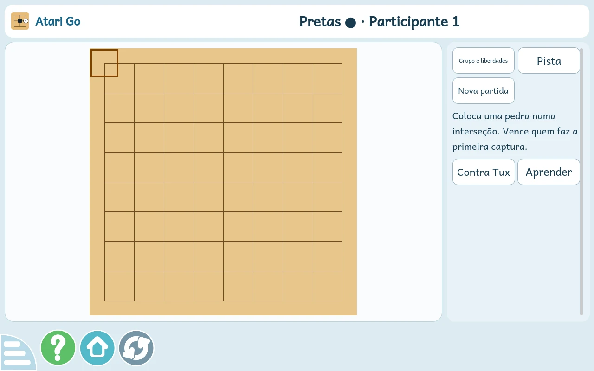
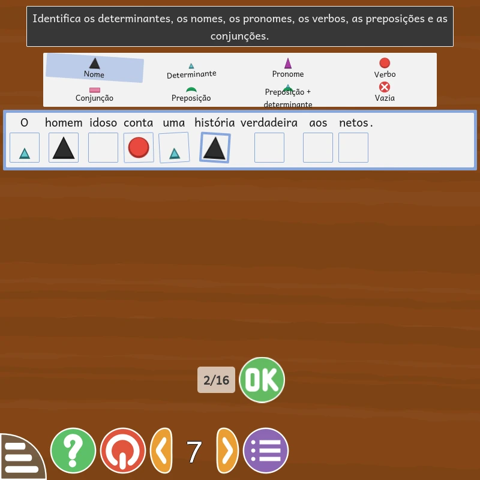
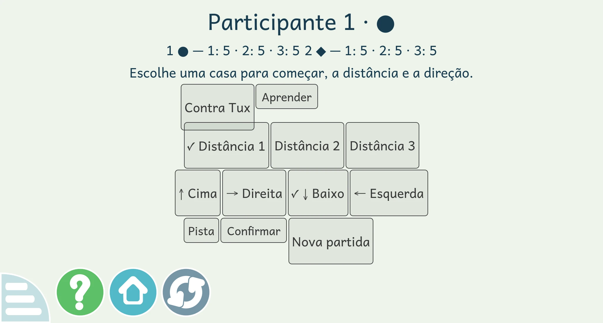
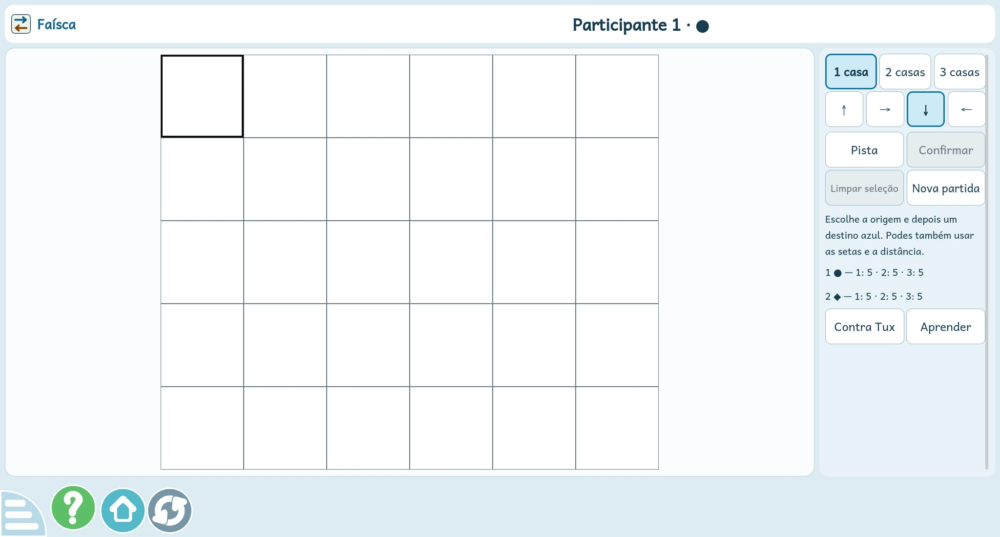
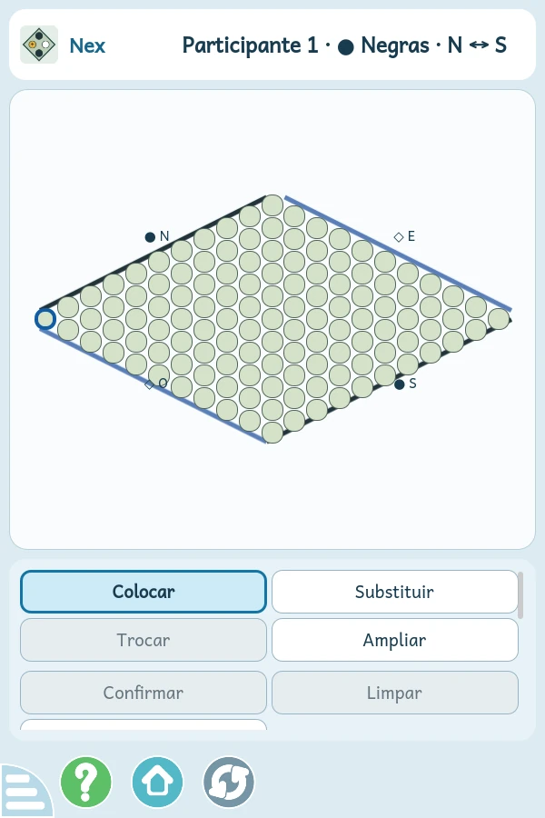

FEITO A PENSAR NA NOSSA ESCOLA
Aprender, jogar.
E continuar
a melhorar.
O GCompris que estamos a adaptar: mais português de Portugal, novos desafios e espaço para crescer. Aqui fica o registo do caminho.
Software livre · Fork independente do projeto KDE GCompris


Tentar.
Descobrir.
PT-PTA nossa língua, em primeiro lugar
8 novos jogosEstratégia e aprendizagem guiada
Sem InternetRecursos incluídos no instalador
DIÁRIO DO FORK
O que tem mudado.
Um registo das alterações, com a diferença
entre o código e o Windows que podes instalar.
DA APLICAÇÃO, SEM MAQUETAS
Novidades em imagens.
Capturas reais da aplicação Qt em Linux.
Seleciona uma imagem para a ampliar.
Próximo instalador Estes oito jogos e a interface revista ainda não estão no candidato Windows de 16 de outubro.


TAMBÉM NA NOSSA LÍNGUA
Mais frases.
Uma caixa por palavra.
Os exercícios de gramática ganham novos níveis e símbolos conjuntos para contrações. A imagem mostra a análise de «O homem idoso conta uma história verdadeira aos netos.».
Captura da verificação local da gramática revista, em Linux. Esta alteração é posterior ao candidato Windows de 16 de outubro.
ANTES / DEPOIS
O tabuleiro volta
ao centro do jogo.
Na Faísca, a escala de um ecrã grande fazia os controlos ocupar o espaço da partida. A disposição revista reserva uma área própria para jogar e adapta as ferramentas à janela.
Capturas do mesmo perfil: janela de 2048 × 1100, ecrã virtual de 2048 × 1152. A comparação usa o tamanho de texto normal.






JANELAS PEQUENAS TAMBÉM CONTAM
De lado ou ao alto.
Há espaço para a partida.
Em retrato, as opções ficam abaixo do tabuleiro. Y e Nex permitem ampliar a vista para escolher uma jogada com mais precisão.
Captura em janela de 600 × 900. O teste usa toque sintético; a validação em tablet físico está pendente.
O INSTALADOR MAIS RECENTE
Leva o GCompris
para o Windows.
O nosso candidato de teste inclui as 203 atividades da edição PT-PT e os recursos para jogar sem Internet.
Descarregar instaladorWindows x64 · {{SIZE}} MB · {{RELEASE_DATE}}
A página fica sempre online. O download depende de o servidor de ficheiros estar ligado.
Candidato de teste
Antes de instalar
- Windows 10 de 64 bits, versão 1809 ou posterior.
- A instalação requer permissões de administrador.
- Os jogos CRJM, a revisão visual e a ampliação da gramática de 17 de outubro aguardam um novo pacote.
- A validação no Windows 10 da escola e a revisão pedagógica final continuam pendentes.
Identificar e verificar este pacote
Fonte: {{SOURCE}} · execução {{RUN}}
SHA-256:
{{SHA256}}Depois de descarregar, no PowerShell:
Get-FileHash .\GCompris-PT-PT-Windows-x64.exe -Algorithm SHA256Compara o resultado com o hash acima. Ficheiro de checksums ↗
CONSTRUÍDO SOBRE SOFTWARE LIVRE
Uma adaptação nossa.
Um trabalho de muitas pessoas.
Este é um fork independente de GCompris, o software educativo desenvolvido pela comunidade KDE. Mantemos o código e o histórico das nossas alterações disponíveis para consulta.